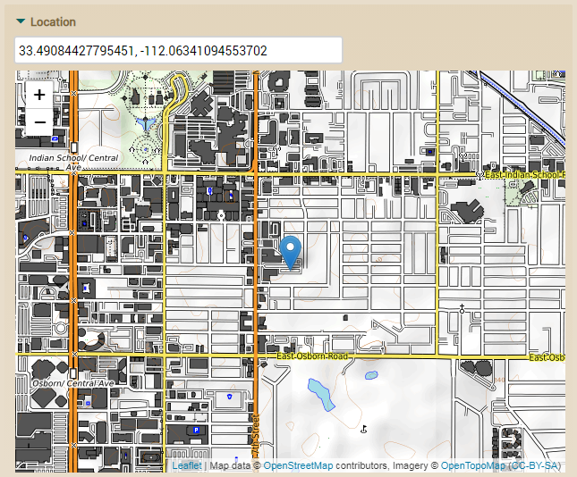
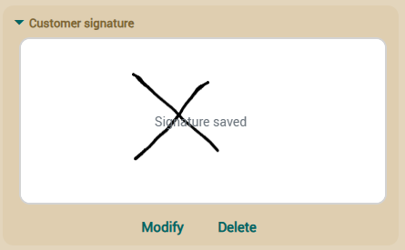

Reference guide:
Model |
View |
Tabular
data |
Object/relational
mapping |
Controllers
|
Application |
Customizing
The model layer in an object oriented application contains the business
logic, that is the structure of the data and all the calculations,
validations and processes associated to this data.
OpenXava is a model oriented framework where the model is the most
important, and the rest (e.g. user interface) depends on it.
The way to define the model in OpenXava is using plain Java classes
(although a
XML version
is also available). OpenXava generates a full featured application from
your model definition.
Business Component
The basic unit to create an OpenXava application is the business
component. A business component is defined using a Java class called
Entity.
This class is a regular EJB3 entity, or in other words, a
POJO
class with annotations that follows the
Java Persistence API (JPA) standard.
JPA is the Java standard for persistence, that is, for objects that store
its state in a database. If you know how to develop using POJOs with JPA,
you already know how to develop OpenXava applications.
Using a simple Java class you can define a Business Component with:
- Model: Data structure, validations, calculations,
etc.
- View:
How the model can be shown to the user.
- Tabular data:
How the data of the component is displayed in list mode (in tabular
format).
- Object/relational
mapping: How to store and retrieve the object state
from database.
This chapter explains how to define the model part, that is, all about
structure, validations, calculations, etc.
Entity
In order to define the model part you have to define a Java or
Groovy (since v4m6) class with
annotations. In addition to its own annotations, OpenXava supports
annotations from
JPA,
Hibernate Validator and
Hibernate Annotations. This Java class is an entity,
that is, a persistent class that represents a business concept.
In this chapter JPA is used to indicate that it's a standard Java
Persistent API annotation, HV for indicating it's a Hibernate Validator
annotation, HA for indicating it's a Hibernate Annotation and OX for
indicating that is an annotation of OpenXava.
This is the syntax for an entity:
@Entity // 1
@EntityValidator // 2
@RemoveValidator // 3
public class EntityName { // 4
// Properties // 5
// References // 6
// Collections // 7
// Methods // 8
// Finders // 9
// Callback methods // 10
}
- @Entity (JPA, one, required): Indicates that this class is
a JPA entity, in other words, its instances will be persistent
objects.
- @EntityValidator
(OX, several, optional): Executes a validation at
model level. This validator can receive the value of various model
properties. To validate a single property it is better to use a
property level validator.
- @RemoveValidator
(OX, several, optional): It's executed before
removal, and can deny the object removing.
- Class declaration: As a regular Java class. You can
use extends and implements.
- Properties:
Regular Java properties. They represent the main state of the object.
- References:
References to other entities or embeddable classes.
- Collections:
Collections of references to other entities or embeddable classes.
- Methods:
Java methods with the business logic.
- Finders:
Finder methods are static method that do searches using JPA query
facilities.
- Callback
methods: JPA callbacks methods to insert logic on
creating, modifying, loading, removing, etc.
Embeddable classes
As stated in JPA specification:
"An entity may use other fine-grained classes to represent entity
state. Instances of these classes, unlike
entity instances themselves, do not have persistent identity. Instead,
they exist only as embedded objects
of the entity to which they belong. Such embedded objects belong
strictly to their owning entity, and are
not sharable across persistent entities."
The embeddable class syntax is:
@Embeddable // 1
public class EmbeddableName { // 2
// Properties // 3
// References // 4
// Methods // 5
}
- @Embeddable (JPA, one, required): Indicates that this class is
an embeddable class of JPA, in other words, its instances will be part
of persistent objects.
- Class declaration: As a regular Java class. You can
use extends and implements.
- Properties:
Regular Java properties.
- References:
References to entities or embeddable classes.
- Methods:
Java methods with the business logic.
Properties
A property represents the state of an object that can be read and in some
cases updated. The object does not have the obligation to store physically
the property data, it only has to return it when required.
The syntax to define a property is:
@Stereotype // 1
@Column(length=) @Column(precision=) @Max @Length(max=) @Digits(integer=) // 2
@Digits(integer=) @Digits(fraction=) // 3
@Required @Min @Range(min=) @Length(min=) // 4
@Id // 5
@Hidden // 6
@SearchKey // 7
@Version // 8
@Formula // 9 New in v3.1.4
@Calculation // 10 New in v5.7
@DefaultValueCalculator // 11
@PropertyValidator // 12
private type propertyName; // 13
public type getPropertyName() { ... } // 13
public void setPropertyName(type newValue) { ... } // 13
- @Stereotype
(OX, optional): Allows to specify a special
behavior for some properties.
- @Column(length=) (JPA), @Max (BV), @Length(max=) (HV), @Digits(integer=) (BV) (optional, usually you only use one of them):
Length in characters of property, except in @Max case that
is the max value. Useful to generate user interfaces. If you do not
specify the size then a default value is assumed. This default value
is associated to the stereotype or type and it's obtained from default-size.xml.
@Max and @Digits are from Bean Validation (new
in v4.1) or Hibernate Validator (until v5.2.x).
- @Column(scale=) (JPA), @Digits(fraction=) (BV): Scale (size of decimal part) of property.
Only applies to numeric properties. If you do not use @Column
or @Digits a default value is assumed, if you use @Column
without length, without precision and without scale
a default value is assumed for scale, if you use @Column
with length or precision and without scale a
0 is assumed for scale (new in v7.0.6 before a default value
was assumed), if you use @Digits without fraction,
0 is assumed. The default value is associated to the stereotype or
type and is obtained from default-size.xml. @Digits
is from Bean Validation (new in v4.1) or Hibernate Validator
(until v5.2.x).
- @Required (OX), @Min (BV), @Range(min=) (HV), @Length(min=) (HV) (optional, usually you only use one of them):
Indicates if this property is required. In the case of @Min,
@Range and @Length you have to put a value greater
than zero for min in order to assume that the property is
required. By default a property is required for key properties hidden
(new in v2.1.3) and false in all the other cases. On saving
OpenXava verifies if the required properties are present. If this is
not the case, then the saving is not done and a validation error list
is returned. The logic to determine if a property is present or not
can be configured by creating a file called validators.xml
in your project. You can see the syntax in openxava/src/main/resources/xava/default-validators.xml.
@Required and @Min are Bean
Validation constraints since v5.3 and they were Hibernate
Validator constraints until v5.2.x.
- @Id (JPA, optional): Indicates that this property is
part of the key. At least one property (or reference) must be key. The
combination of key properties (and key references) must be mapped to a
group of database columns that do not have duplicate values, typically
the primary key.
- @Hidden (OX, optional): A hidden property has a meaning
for the developer but not for the user. The hidden properties are
excluded when the automatic user interface is generated. However at
Java code level they are present and fully functional. Even if you put
it explicitly into a view the property will be shown in the user
interface.
- @SearchKey (OX, optional): The search key properties are used
by the user as key for searching objects. They are editable in user
interface of references allowing to the user type its value for
searching. OpenXava uses the @Id properties for searching by
default, and if the id properties are hidden then it uses the first
property in the view. With @SearchKey you can choose
explicitly the properties for searching.
- @Version
(JPA, optional): A version property is used for
optimistic concurrency control. If you want control concurrency you
only need to have a property marked as @Version in your
entity. Only a single version property should be used per entity. The
following types are supported for version properties: int,
Integer, short, Short, long, Long, Timestamp. The version
properties are considered hidden.
- @Formula
(HA, optional): (New in v3.1.4) To
calculate the value of the property using the database. It must be a
valid SQL fragment.
- @Calculation
(OX, one, optional): (New in v5.7)
Arithmetic expression to do the calculation for the property. The
calculation is done in the user interface when any operand changes.
- @DefaultValueCalculator
(OX, one, optional): Implements the logic to
calculate the default (initial) value for this property. A property
with @DefaultValueCalculator has setter and it is
persistent.
- @PropertyValidator
(OX, several, optional): Implements the validation
logic to execute on this property before modifying or creating the
object that contains it.
- Property declaration: A regular Java property
declaration with its getters and setters. You can create a calculated
property using only a getter with no field nor setter. Any type legal
for JPA is available, you only need to provide a Hibernate Type to
allow saving in database and an OpenXava editor to render as HTML.
Stereotype
A stereotype (
@Stereotype) is the way to determine a
specific behavior of a type. For example, a name, a comment, a
description, etc. all correspond to the Java type java.lang.String but you
surely wish validators, default sizes, visual editors, etc. to be
different in each case and you need to tune finer; you can do this
assigning a stereotype to each case. That is, you can have the next
sterotypes NAME, MEMO or DESCRIPTION and assign them to your properties.
Since v6.6 you can use Java
annotations instead of stereotypes (that is you can use @File
instead of @Stereotype("FILE")), so the compiler assures that the
code is well write and moreover each annotation can include its specific
attributes.
OpenXava comes with these generic
stereotypes and since v6.6 with their corresponding annotation:
- @Money
(new in v6.6), MONEY, DINERO
- PHOTO, IMAGEN, FOTO, IMAGE (since v6.6 you can use @File as
alternative that is more flexible and performant)
- @TextArea
(new in v6.6), MEMO, TEXT_AREA, TEXTO_GRANDE
- @Label
(new in v6.6), LABEL, ETIQUETA
- BOLD_LABEL, ETIQUETA_NEGRITA
- @StringTime
(new in v6.6), TIME, HORA (since v7.3 you can use LocalTime
type property instead of String. It has a more sophisticated
editor and maps to a TIME type data in the database)
- @DateTime
(new in v6.6), DATETIME, FECHAHORA (since v7.4 you can use LocalDateTime
type property instead of Date with @DateTime/Stereotype("DATETIME"))
- IMAGES_GALLERY, GALERIA_IMAGENES (setup
instructions) (since v6.6 you can use @Files as
alternative)
- @ZerosFilled
(new in v7.1), ZEROS_FILLED, RELLENADO_CON_CEROS
- @HtmlText
(new in v6.6), HTML_TEXT, TEXTO_HTML (text with editable
format)
- @HtmlText(simple=true)
(new in v6.6), SIMPLE_HTML_TEXT, TEXTO_HTML_SIMPLE (new in
v5.6, like HTML_TEXT with a simplified UI)
- IMAGE_LABEL, ETIQUETA_IMAGEN (image depending on property content)
- @Email (from javax.validation.constraints) (new
in v6.6), EMAIL
- @Telephone
(new in v6.6), TELEPHONE, TELEFONO
- @URL (from org.hibernate.validator.constraints) (new
in v6.6), WEBURL
- @IP
(new in v6.6), IP
- @ISBN (from org.hibernate.validator.constraints) (new
in v6.6), ISBN
- @CreditCardNumber (from org.hibernate.validator.constraints)
(new in v6.6), CREDIT_CARD, TARJETA_CREDITO
- @EmailList
(new in v6.6), EMAIL_LIST, LISTA_EMAIL
- DOCUMENT_LIBRARY, LIBRERIA_DOCUMENTOS (new in v4m6, until
v6.6.3, it only works inside Liferay)
- @Password
(new in v6.6), PASSWORD, CONTRASENA (new in v4.1)
- @MAC
(new in v6.6), MAC (new in v4.8)
- @File
(new in v6.6), FILE, ARCHIVO (new in v5.0) (setup instructions)
- @Files
(new in v6.6), FILES, ARCHIVOS (new in v5.1) (setup instructions)
- @Icon
(new in v6.6), ICON, ICONO (new in v5.5)
- @Discussion
(new in v6.6), DISCUSSION, DISCUSION (new in v5.6) (setup instructions)
- @Coordinates,
COORDINATES, COORDENADAS (new in v6.6) (setup instructions)
- @HandwrittenSignature, HANDWRITTEN_SIGNATURE, FIRMA_MANUSCRITA (new in v7.6) (setup instructions)
NOTE: Most of the above Stereotypes return a String,
but
not all! Rather than list the exceptions here, reference the file
openxava/src/main/resources/xava/stereotype-type-default.xml
to keep up to date with each Stereotype proper return type.
Now you will learn how to define your own stereotype. You will create one
called PERSON_NAME to represent names of persons.
Edit (or create) the file
editors.xml in your folder
src/main/resources/xava
(just
xava before v7). And add:
<editor url="personNameEditor.jsp">
<for-stereotype stereotype="PERSON_NAME"/>
<for-annotation annotation="com.yourcompany.yourapp.annotations.PersonName"/> <!-- New in v6.6 -->
</editor>
This way you define the editor to render for editing and
displaying properties of stereotype PERSON_NAME. Note as since v6.6 you
can define an annotation instead of an stereotype, you can also use both.
Furthermore it is useful to indicate the default size; you can do this by
editing
default-size.xml of your project:
<for-stereotype name="PERSON_NAME" size="40"/>
<for-annotation class="com.yourcompany.yourapp.annotations.PersonName" size="40"/> <!-- New in v6.6 -->
Thus, if you do not put the size in a property of type PERSON_NAME
(or
@PersonName) a value of 40 is assumed.
Not so common is changing the validator for required, but if you wish to
change it you can do it adding to
validators.xml of your project
the next definition:
<required-validator>
<validator-class class="org.openxava.validators.NotBlankCharacterValidator"/>
<for-stereotype stereotype="PERSON_NAME"/>
<for-annotation annotation="com.yourcompany.yourapp.annotations.PersonName"/> <!-- New in v6.6 -->
</required-validator>
Now everything is ready to define properties of stereotype
PERSON_NAME:
@Stereotype("PERSON_NAME")
private String name;
In this case a value of 40 is assumed as size, String as type and
the
NotBlankCharacterValidator validator is executed to verify
if it is required.
Since v6.6 you can use a Java
annotation instead of a stereotype, in this way:
@PersonName
private String name;
Obviously, you have to write the
code for
@PersonName annotation. Look at
customizing
doc to learn more about defining your own annotations.
IMAGES_GALLERY
stereotype
Since v6.6 you can use @Files instead because now
@Files shows images preview of uploaded files. @Files has more options
than IMAGES_GALLERY and allows several persistence mechanism.If you want a property of your
component to hold a gallery of images, you only have to declare your
property with the IMAGES_GALLERY stereotype, in this way:
@Stereotype("IMAGES_GALLERY")
private String photos;
Furthermore, in the mapping part you have to map your property to a table
column suitable to store a String with a length of 32 characters
(VARCHAR(32)).
And everything is done.
IMPORTANT
In order to support this stereotype you need to setup the system
appropriately for your application.
First, create a table in your database to store the images:
CREATE TABLE IMAGES (
ID VARCHAR(32) NOT NULL PRIMARY KEY,
GALLERY VARCHAR(32) NOT NULL,
IMAGE BLOB);
CREATE INDEX IMAGES01
ON IMAGES (GALLERY);
The type of IMAGE column can be a more suitable one for your database to
store byte [] (for example LONGVARBINARY) .
For PostgreSQL, the value to use instead of BLOB is BYTEA.
Also, it appears that the default configuration will create the IMAGES
table with the VARCHARS at 255 length. Go ahead and drop and re-create the
table as above and all should be well.
Verify that
persistence.xml
contains the
GalleryImage entity, if not add it:
<persistence-unit name="default">
<provider>org.hibernate.ejb.HibernatePersistence</provider>
<non-jta-data-source>java:comp/env/jdbc/OpenXavaTestDS</non-jta-data-source>
<class>org.openxava.session.GalleryImage</class> <!-- ADD THIS LINE -->
<class>org.openxava.web.editors.DiscussionComment</class>
...
</persistence-unit>
Note that we added
<class>org.openxava.session.GalleryImage</class>.
If you're using an OpenXava version older than 7.0 you
need to define the mapping in your persistence/hibernate.cfg.xml
file, thus:
<hibernate-configuration>
<session-factory>
...
<mapping resource="GalleryImage.hbm.xml"/>
...
</session-factory>
</hibernate-configuration>
After this you can use the IMAGES_GALLERY stereotype in all components of
your application.
File (new in v5.0) and Files (new
in v5.1)
If you want a property of your component to attach a file, you only have
to declare your property with the
@File annotation
(new in
v6.6), in this way:
@File
@Column(length=32)
private String document;
Or if you use a version previous
to 6.6 using the FILE stereotype, in this way:
@Stereotype("FILE")
@Column(length=32)
private String document;
Use
@Files (new in v6.6) for attaching multiple
files:
@Files
@Column(length=32)
private String documents;
Or if you use a version previous
to 6.6 use the FILES stereotype, thus:
@Stereotype("FILES")
@Column(length=32)
private String documents;
When you use the annotation version (
@File or
@Files)
you can define attributes like
acceptFileTypes or
maxFileSizeInKb
to restrict the files the user can upload. For example, with this code:
@File(acceptFileTypes="image/*", maxFileSizeInKb=90)
@Column(length=32)
private String photo;
The user can only upload images of
90 Kb or less, and with this one:
@Files(acceptFileTypes="text/csv, application/vnd.ms-excel, application/vnd.openxmlformats-officedocument.spreadsheetml.sheet")
@Column(length=32)
private String spreadsheets;
Only CSV and Excel files. As you
can see in
acceptFileTypes you put a
list
of mime types separated by commas and you can use wildcards.
OpenXava can be configured to
store the files in the database or the file system.
Storage
in File System
It is the default and requires no additional configuration.
The storage directory is
$HOME/oxfiles (GNU/Linux) or
%USERPROFILE%\oxfiles
(Windows). We can set a different directory using the
filesPath
property in
xava.properties.
Storage
in Database
You need three additional settings:
- Set the filePersistorClass property in xava.properties
filePersistorClass=org.openxava.web.editors.JPAFilePersistor
...
- Modify the persistence.xml
<persistence-unit name="default">
<provider>org.hibernate.ejb.HibernatePersistence</provider>
<non-jta-data-source>java:comp/env/jdbc/OpenXavaTestDS</non-jta-data-source>
<class>org.openxava.session.GalleryImage</class>
<class>org.openxava.web.editors.AttachedFile</class>
...
</persistence-unit>
...
<persistence-unit name="junit">
<provider>org.hibernate.ejb.HibernatePersistence</provider>
<class>org.openxava.web.editors.AttachedFile</class>
....
</persistence-unit>
Note that you added
<class>org.openxava.web.editors.AttachedFile</class>
both persistence units.
- When the database is generated, the table OXFILES is created:
CREATE TABLE OXFILES (
ID VARCHAR(32) NOT NULL PRIMARY KEY,
NAME VARCHAR(255),
DATA LONGVARBINARY,
LIBRARYID VARCHAR(32)
);
You should check that the type of DATA column is the most suitable type
for storing byte[] (in our case LONGVARBINARY).
Manage files programmatically
Properties annotated with @File, @Files, @HandwrittenSignature, Stereotype("FILE"),
@Stereotype("FILES") or @Stereotype("HANDWRITTEN_SIGNATURE") only store a 32-character identifier, not
the file content. To access the content of the uploaded file from your
own code, you need to use an IFilePersistor
obtained from FilePersistorFactory,
classes that you can find in the org.openxava.web.editors
package. These classes work the same regardless of whether the files are
stored in the file system, a database, or any other location.
In the case of @File, @HandwrittenSignature, @Stereotype("FILE") or
@Stereotype("HANDWRITTEN_SIGNATURE"), the
property directly stores the file ID. For example, if we have a property
like this:
@File @Column(length=32)
String photo;
We can fill it with a file using our own code like this:
import java.nio.file.*;
import org.openxava.actions.*;
import org.openxava.web.editors.*;
public class LoadPhotoAction extends ViewBaseAction {
public void execute() throws Exception {
// In this example we get the file from filesystem
// but in your case you could get the file from any other place
String filePath = "/home/me/images/myphoto.png";
byte[] fileBytes = Files.readAllBytes(Paths.get(filePath));
// An IFilePersistor to work with the file
IFilePersistor filePersistor = FilePersistorFactory.getInstance();
// We create an AttachedFile object
AttachedFile file = new AttachedFile();
file.setName("myphoto.png");
file.setData(fileBytes);
// This save the file
filePersistor.save(file);
// After saved, the AttachedFile has its id populated
// so we set it to the property in the view
getView().setValue("photo", file.getId());
}
}
You create an AttachedFile
and save it with an IFilePersistor,
then obtain the file ID to use it as the value for the property. The photo
property stores the file ID.
The reverse process, that is, obtaining and manipulating the file
already in the @File property, would be like this:
import java.nio.file.*;
import org.openxava.actions.*;
import org.openxava.web.editors.*;
public class SavePhotoAction extends ViewBaseAction {
public void execute() throws Exception {
// An IFilePersistor to work with the file
IFilePersistor filePersistor = FilePersistorFactory.getInstance();
// We get the photo id from the property
String photoId = getView().getValueString("photo");
// And find the AttachedFile with that id using the IFilePersistor
AttachedFile file = filePersistor.find(photoId);
// We get the name and the content from the AttachedFile
String fileName = file.getName();
byte[] fileBytes = file.getData();
// In this example we save the file in the filesystem
// but you could do anything you want with the file
String filePath = "/home/me/images/" + fileName;
Files.write(Paths.get(filePath), fileBytes);
}
}
You search for an AttachedFile using an IFilePersistor
based on the photo ID you have in the property.
Working with @Files or @Stereotype(“FILES”) is slightly
different because, in this case, the property stores the library ID, not
the file ID. A library is a group of files. Each file has its own ID,
but they all share a common library ID. For example, with a property
like this:
@Files @Column(length=32)
String documents;
We can populate it with multiple files using our own code like this:
import java.nio.file.*;
import org.openxava.actions.*;
import org.openxava.web.editors.*;
public class LoadDocumentsAction
extends GenerateIdForPropertyBaseAction { // To use the generateIdForProperty() method
public void execute() throws Exception {
// In this example we're going to upload some files from the filesystem
// but you could get the files or files content from any other place
String basePath = "/home/me/documents/";
String [] fileNames = {
"limiting-data-by-user.pdf",
"quick-start.odg"
};
// We need generate an id for the library first time or use the one
// that already exists. This work is done for you by generateIdForProperty()
// The generated id is left in the 'documents' property in the view
String libraryId = generateIdForProperty("documents");
// An IFilePersistor to work with the files
IFilePersistor filePersistor = FilePersistorFactory.getInstance();
for (String fileName: fileNames) {
// For our example we get the file content from filesystem
byte[] fileBytes = Files.readAllBytes(Paths.get(basePath + fileName));
// We create an AttachedFile and fill it
AttachedFile file = new AttachedFile();
file.setLibraryId(libraryId); // The same libraryId for all files
file.setName(fileName);
file.setData(fileBytes);
// Then save it using the IFilePersistor
filePersistor.save(file);
}
}
}
The trick is that we need to have a single library ID to assign to each
of the files we are going to save. This ID is generated with generateIdForProperty(),
which creates it if it doesn’t exist or returns it if it already does.
If a new one is generated, it is assigned to the property in the view,
so when the entity is saved, it will be saved with the correct library
ID. The rest is simply a loop creating AttachedFile and saving
them with IFilePersistor, assigning each one the same library
ID.
The opposite process, that is, retrieving and manipulating the files
that are already in the @Files property, would be like this:
import java.nio.file.*;
import java.util.*;
import org.openxava.actions.*;
import org.openxava.web.editors.*;
public class SaveDocumentsAction extends ViewBaseAction {
public void execute() throws Exception {
// An IFilePersistor to work with the files
IFilePersistor filePersistor = FilePersistorFactory.getInstance();
// For @Files the property stores the library id, not any file id
String libraryId = getView().getValueString("documents");
// We use findLibrary() of IFilePersistor to get a collection of files
Collection<AttachedFile> files =filePersistor.findLibrary(libraryId);
for (AttachedFile file: files) {
// We get the name and content from the AttachedFile
String fileName = file.getName();
byte[] fileBytes = file.getData();
String filePath = "/home/me/documents/" + fileName;
// In our example we save in the filesystem,
// but in your case you can do whatever you want
Files.write(Paths.get(filePath), fileBytes);
}
}
}
Remember that for @Files in the property, the library ID is
stored, not the file ID. From this ID, we use the findLibrary()
method of IFilePersistor to get all the files associated with
that library, i.e., that property. Then we loop through those files and
process them as desired.
Discussion (new in v5.6)
If you want a property of your component to contain a discussion thread,
just like the ones in forums, trackers, blogs, etc. You only have to
annotate your property with
@Discussion (new in v6.6), in this
way:
@Discussion
@Column(length=32)
private String discussion;
Or if you use a version previous
to 6.6 using the DISCUSSION stereotype, thus:
@Stereotype("DISCUSSION")
@Column(length=32)
private String discussion;
Also if you want that when the
entity is removed the associated discussion would be removed too, you have
to add the next code to your entity:
@PreRemove
private void removeDiscussion() {
DiscussionComment.removeForDiscussion(discussion);
}
Verify that
persistence.xml contains the
DiscussionComment
entity, if not add it:
<persistence-unit name="default">
<provider>org.hibernate.ejb.HibernatePersistence</provider>
<non-jta-data-source>java:comp/env/jdbc/OpenXavaTestDS</non-jta-data-source>
<class>org.openxava.session.GalleryImage</class>
<class>org.openxava.web.editors.DiscussionComment</class> <!-- ADD THIS LINE -->
...
</persistence-unit>
Note that we added
<class>org.openxava.web.editors.DiscussionComment</class>.
When the database is generated, the OXDISCUSSIONCOMMENTS table is created:
CREATE TABLE OXDISCUSSIONCOMMENTS (
ID VARCHAR(32) NOT NULL,
COMMENT CLOB(16777216),
DISCUSSIONID VARCHAR(32),
TIME TIMESTAMP,
USERNAME VARCHAR(30),
PRIMARY KEY (ID)
);
CREATE INDEX OXDISCUSSIONCOMMENTS_DISCUSSIONID_INDEX
ON OXDISCUSSIONCOMMENTS (DISCUSSIONID);
Check that the type for COMMENT column is the most suitable type for
storing a large text (by default CLOB) in your database, if not just do an
ALTER COLUMN to put a better type.
With Tomcat 6 you have to edit the class
org.openxava.web.editors.DiscussionComment
and remove the
@Lob annotation from
comment property.
Coordinates (new in v6.6)
A coordinates property allows your user to choose a point in a map and
store it. To define it annotate your property with
@Coordinates or
@Stereotype("COORDINATES"):
@Coordinates @Column(length=50)
private String location;
Note the type, String, and
the length, 50, enough to store coordinates. From the above code you get:

The user can mark in any part of
the map then the coordinates change. Also if he types or pastes the
coordinates in the field the map and the mark are repositioned.
You can use
@Coordinates
without any special setup, however you have the option of changing the
tile provider in
xava.properties. OpenXava uses an open source
JavaScript library to draw the map (
Leaflet)
and the maps are free, from
OpenStreetMap.
Still you need tile provider servers in order maps works, you should
install and configure a software in a server to turn the maps into images
to send to the JavaScript component on demand. Configure such server is
complex and time consuming, so most time it's easier to use tile provider
servers from third parties. OpenXava allows you to define the tile
provider you want in
xava.properties. By default, it's configured
to use
OpenTopoMap with these
entries in
xava.properties:
# OpenTopoMap
mapsTileProvider=https://b.tile.opentopomap.org/{z}/{x}/{y}.png
mapsAttribution=Map data © <a href="https://www.openstreetmap.org/copyright">OpenStreetMap</a> contributors, Imagery © <a href="https://opentopomap.org">OpenTopoMap</a> (<a href="https://creativecommons.org/licenses/by-sa/3.0/">CC-BY-SA</a>)
OpenTopoMap is free to use even
for commercial projects with CC-BY-SA license.
You can define other tile
providers, like
MapBox, in this
way:
# MapBox
# Change below YOUR_ACCESS_TOKEN by your own access token
mapsTileProvider=https://api.mapbox.com/styles/v1/mapbox/streets-v11/tiles/{z}/{x}/{y}?access_token=YOUR_ACCESS_TOKEN
mapsAttribution=Map data © <a href="https://www.openstreetmap.org/copyright">OpenStreetMap</a> contributors, Imagery © <a href="https://www.mapbox.com/">Mapbox</a>
mapsTileSize=512
mapsZoomOffset=-1
MapBox is a commercial provider,
although they offer free plans. You have to register in
https://www.mapbox.com/
to get an access token. Remember to change YOUR_ACCESS_TOKEN in the URL by
your own access token. For this provider you have to define
mapsTileSize
and
mapsZoomOffset in order the maps would be displayed nicely.
With MapBox the map looks like this:

The editor for
@Coordinates
is a framed editor, that is it's inside a frame the user can collapse. You
can use the
layout features of OpenXava by means
of @View to place it in the user interface the way you want,
for example, if you want a form with all fields on left and the map on
right, you can write a
@View annotation like this:
@View(members=
"city [ state; "
+ "stateCondition;"
+ "code;"
+ "name;"
+ "population;"
+ "zipCode;"
+ "county;"
+ "country;"
+ "settled;"
+ "area;"
+ "elevation;"
+ "governmentType;"
+ "mayor;"
+ "], "
+ "location")
Where
location @Coordinates
is a property. Note as we used a group (those properties between
square brackets []) for the plain properties and place that group side by
side (using a comma) with the
location property. The result is:

Handwritten signature (new in v7.6)
Handwritten signature is only available with XavaPro
To allow the user to sign by hand and save their signature in a property,
you have to annotate the property with @HandwrittenSignature or @Stereotype("HANDWRITTEN_SIGNATURE"):
import com.openxava.annotations.*; // Not org.openxava.annotations.*
...
@HandwrittenSignature
@Column(length=32)
private String customerSignature;
Note how the annotation is in the package com.openxava.annotations (from XavaPro) and not
in org.openxava.annotations.
The property would be displayed like this:

The user will be able to sign with their finger or a stylus for touch screens, especially
designed for mobile phones and tablets, although it is also possible to sign using the mouse.
The property type is a String of 32 characters where an id is stored,
not the signature itself. Signatures can be stored
in the file system
or
in the database, using the same mechanism (the same filePersistorClass)
as @File and @Files. It is also possible to
manipulate signatures programmatically with FilePersistorFactory as
with @File and @Files.
Mask (new in v7.1)
A mask in String defines the valid format of input values. To do this, you
must use the
@Mask annotation with some of the following
{{ ... }}
validators:
- 'L': the user must enter an alphabetical letter from A ~ z.
- '0': the user must enter a digit.
- 'A': the user must enter an alphanumeric character.
- '#': the user must enter a digit, blank space, '+' or '-'.
You can also add special characters, blank spaces statically and even
combine validators, for example:
@Mask("L-000000")
private String passport;
@Mask("0000 0000 0000 0000")
private String creditCard;
@Mask("LL 000 AA")
private String carPlate;
@Mask("0.000/0-000")
private String customMask;

Concurrency
and version property
Concurrency is the ability of the application to allow several users to
save data at same time without losing data. OpenXava uses the optimistic
concurrency of JPA. When you use optimistic concurrency the records are
not locked allowing high concurrency without losing data integrity.
For example, if a user A reads a record and then a user B reads the same
record, modifies it and saves the changes, when the user A tries to save
the record he receives an error, then he needs to refresh the data and to
retry his modification.
For activating concurrency support for an entity you only need to declare
a property using
@Version, in this way:
@Version
private Integer version;
This property is persistence engine use, your application or your user
must not use this property directly. If you don't use automatic schema
evolution remember to add the column VERSION to the table.
Enums
OpenXava supports Java 5 enums. An enum allows you to define a property
that can hold one of the indicated values only .
It's easy to use, let's see this example:
private Distance distance;
public enum Distance { LOCAL, NATIONAL, INTERNATIONAL };
The
distance property only can have the following values: LOCAL,
NATIONAL or INTERNATIONAL, and as
@Required is not specified, no
value (null) is allowed too. Since v5.3 if
@Required is
specified, the first option is the default value and an empty value is not
available. If a different default value is required, use
@DefaultValueCalculator.
Since v5.6.1 the enums annotated with
@Required in an
embeddable class will
display empty value if it is used in a collection of elements.
At the user interface level the current implementation uses a combo. The
label for each value is obtained from the
i18n files.
At the database level, the value is by default saved as an integer (0 for
LOCAL, 1 for NATIONAL, 2 for INTERNATIONAL and null for no value), but
another field type can easily be configured in order to work correctly
with legacy databases. See more about this in the
mapping
chapter.
Enums with icon (new in
v6.3)
You can associate an icon to each enum option using
org.openxava.model.IIconEnum:
public enum Priority implements IIconEnum {
LOW("transfer-down"), MEDIUM("square-medium"), HIGH("transfer-up");
private String icon;
private Priority(String icon) {
this.icon = icon;
}
public String getIcon() {
return icon;
}
};
private Priority priority;
Just make your enum to implement
IIconEnum that forces you
to have a
getIcon() method. This method has to return an icon id
from
Material Design Icons.
OpenXava can use these icons in several parts of the UI, for example in
list:

Calculated
properties
The calculated properties are read only (only have
getter) and
are not persistent (they do not match with any column of database table).
A calculated property is defined in this way:
@Depends("unitPrice") // 1
@Max(9999999999L) // 2
public BigDecimal getUnitPriceInPesetas() {
if (unitPrice == null) return null;
return unitPrice.multiply(new BigDecimal("166.386")).setScale(0, BigDecimal.ROUND_HALF_UP);
}
According to the above definition now you can use the code in this way:
Product product = ...
product.setUnitPrice(2);
BigDecimal result = product.getUnitPriceInPesetas();
And
result will hold 332.772.
When the property
unitPriceInPesetas is displayed to the user
it's not editable, and its editor has a length of 10, indicated using
@Max(9999999999L)
(2). Also, because of you use
@Depends("unitPrice") (1) when the
user will change the value of the
unitPrice property in the user
interface the
unitPriceInPesetas property will be recalculated
and its value will be refreshed to the user.
@Depends allows you
to define multiple properties separated by commas, and you can depend on
both plain properties and references. See the
JavaDoc
of @Depends for more details.
From a calculated property you have direct access to JDBC connections,
here is an example:
@Max(999)
public int getDetailsCount() {
// An example of using JDBC
Connection con = null;
try {
con = DataSourceConnectionProvider.getByComponent("Invoice").getConnection(); // 1
String table = MetaModel.get("InvoiceDetail").getMapping().getTable();
PreparedStatement ps = con.prepareStatement("select count(*) from " + table +
" where INVOICE_YEAR = ? and INVOICE_NUMBER = ?");
ps.setInt(1, getYear());
ps.setInt(2, getNumber());
ResultSet rs = ps.executeQuery();
rs.next();
Integer result = new Integer(rs.getInt(1));
ps.close();
return result;
}
catch (Exception ex) {
log.error("Problem calculating details count of an Invoice", ex);
// You can throw any runtime exception here
throw new SystemException(ex);
}
finally {
try {
con.close();
}
catch (Exception ex) {
}
}
}
Yes, the JDBC code is ugly and awkward, but sometimes it can help to solve
performance problems. The
DataSourceConnectionProvider class
allows you to obtain a connection associated to the same data source that
the indicated entity (
Invoice in this case). This class is for
your convenience, but you can access to a JDBC connection using JNDI or
any other way you want. In fact, in a calculated property you can write
any code that Java allows you.
If you are using property-based access, that means you annotate the
getters or setters of your class, then you have to add the
@Transient annotation to your calculated
property, in this way:
private long number;
@Id @Column(length=10) // You annotated the getter,
public long getNumber() { // so JPA will use property-base access for your class
return number;
}
public void setNumber(long number) {
this.number = number;
}
@Transient // You have to annotate as Transient your calculated property
public String getZoneOne() { // because you are using property-based access
return "In ZONE 1";
}
Formula
(new in v3.1.4)
Using
@Formula from
Hibernate Annotations you can define a calculation
for your property. This calculation is expressed using SQL, and it is
executed by the database, not by Java. You only need to write a valid SQL
fragment:
@org.hibernate.annotations.Formula("UNITPRICE * 1.16")
private BigDecimal unitPriceWithTax;
public BigDecimal getUnitPriceWithTax() {
return unitPriceWithTax;
}
The use is simple. Put your calculation exactly in the same way that you
would put it in a SQL statement.
Usually the properties with
@Formula are read only properties,
that is, they have only getter, not setter. When the object is read from
database the calculation is done by the database and the property is
populate with it.
This is an alternative to calculated properties. It has the advantage that
the user can filter by this property in list mode, and the disadvantage
that you have to use SQL instead of Java, and you cannot use
@Depends for live recalculation of the value.
Default
value calculator
With
@DefaultValueCalculator you can associate
logic to a property, in this case the property is readable and writable.
This calculator is for calculating its initial value. For example:
@DefaultValueCalculator(CurrentYearCalculator.class)
private int year;
In this case when the user tries to create a new Invoice (for example) he
will find that the year field already has a value, that he can change it
if he wants to. The logic for generating this value is in the
CurrentYearCalculator
class, that it's:
package org.openxava.calculators;
import java.util.*;
/**
* @author Javier Paniza
*/
public class CurrentYearCalculator implements ICalculator {
public Object calculate() throws Exception {
Calendar cal = Calendar.getInstance();
cal.setTime(new java.util.Date());
return new Integer(cal.get(Calendar.YEAR));
}
}
It's possible to customize the behaviour of a calculator setting the value
of its properties, as following:
@DefaultValueCalculator(
value=org.openxava.calculators.StringCalculator.class,
properties={ @PropertyValue(name="string", value="GOOD") }
)
private String relationWithSeller;
In this case for calculating the default value OpenXava instances
StringCalculator
and then injects the value "GOOD" in the property
string of
StringCalculator,
and finally it calls to the
calculate() method in order to
obtain the default value for
relationWithSeller. As you see, the
use of
@PropertyValue annotation allows you to create
reusable calculators.
@PropertyValue allows to inject the value from other displayed
properties, in this way:
@DefaultValueCalculator(
value=org.openxava.test.calculators.CarrierRemarksCalculator.class,
properties={
@PropertyValue(name="drivingLicenceType", from="drivingLicence.type")
}
)
private String remarks;
In this case before to execute the calculator OpenXava fills the
drivingLicenceType
property of
CarrierRemarksCalculator with the value of the
displayed property
type from the reference
drivingLicence.
As you see the
from attribute supports qualified properties
(reference.property). Moreover, each time that
drivingLicence.type
changes
remarks is recalculated (
new in v5.1, with
previous versions it was recalculated only the first time).
Also you can use
@PropertyValue without
from nor
value:
@DefaultValueCalculator(value=DefaultProductPriceCalculator.class, properties=
@PropertyValue(name="familyNumber")
)
In this case OpenXava takes the value of the displayed property
familyNumber
and inject it in the property
familyNumber of the calculator;
that is
@PropertyValue(name="familiyNumber") is equivalent to
@PropertyValue(name="familiyNumber",
from="familyNumber").
From a calculator you have direct access to JDBC connections, here is an
example:
@DefaultValueCalculator(value=DetailsCountCalculator.class,
properties= {
@PropertyValue(name="year"),
@PropertyValue(name="number"),
}
)
private int detailsCount;
And the calculator class:
package org.openxava.test.calculators;
import java.sql.*;
import org.openxava.calculators.*;
import org.openxava.util.*;
/**
* @author Javier Paniza
*/
public class DetailsCountCalculator implements IJDBCCalculator { // 1
private IConnectionProvider provider;
private int year;
private int number;
public void setConnectionProvider(IConnectionProvider provider) { // 2
this.provider = provider;
}
public Object calculate() throws Exception {
Connection con = provider.getConnection();
try {
PreparedStatement ps = con.prepareStatement(
"select count(*) from XAVATEST.INVOICEDETAIL " +
"where INVOICE_YEAR = ? and INVOICE_NUMBER = ?");
ps.setInt(1, getYear());
ps.setInt(2, getNumber());
ResultSet rs = ps.executeQuery();
rs.next();
Integer result = new Integer(rs.getInt(1));
ps.close();
return result;
}
finally {
con.close();
}
}
public int getYear() {
return year;
}
public int getNumber() {
return number;
}
public void setYear(int year) {
this.year = year;
}
public void setNumber(int number) {
this.number = number;
}
}
To use JDBC your calculator must implement
IJDBCCalculator (1)
and then it will receive an
IConnectionProvider (2) that you can
use within the
calculate() method.
OpenXava comes with a set of predefined calculators, you can find them in
org.openxava.calculators.
Default
values on create
You can indicate that the value will be calculated just before creating
(inserting into database) an object for the first time.
Usually for the key case you use the JPA standard. For example, if you
want to use an
identity (auto increment) column as key:
@Id @Hidden
@GeneratedValue(strategy=GenerationType.IDENTITY)
private Integer id;
You can use other generation techniques, for example, a database
sequence
can be defined in this JPA standard way:
@SequenceGenerator(name="SIZE_SEQ", sequenceName="SIZE_ID_SEQ", allocationSize=1 )
@Hidden @Id @GeneratedValue(strategy=GenerationType.SEQUENCE, generator="SIZE_SEQ")
private Integer id;
If you want to generate a unique identifier of type String and 32
characters, you can use a Hibernate extesion of JPA:
@Id @GeneratedValue(generator="system-uuid") @Hidden
@GenericGenerator(name="system-uuid", strategy = "uuid")
private String oid;
Look at section 9.1.9 of JPA 1.0 specification (part of JSR-220) for
learning more about
@GeneratedValues.
If you want to use your own logic for generating the value on creating, or
you want a generated new value for a non-key property then you cannot use
the JPA
@GeneratedValue, although it's easy to solve these cases
using JPA. You only need to add this code to your class:
@PrePersist
private void calculateCounter() {
counter = new Long(System.currentTimeMillis()).intValue();
}
The JPA
@PrePersist annotation does that this method will be
executed before inserting the data the first time in database, in this
method you can calculate the value for your key or non-key properties with
your own logic.
Property
validator
A
@PropertyValidator executes validation logic
on the value assigned to the property just before storing. A property may
have several validators:
@PropertyValidator(value=ExcludeStringValidator.class, properties=
@PropertyValue(name="string", value="MOTO")
)
@PropertyValidator(value=ExcludeStringValidator.class, properties=
@PropertyValue(name="string", value="COCHE")
)
private String remarks;
With an OpenXava older than 6.1 you have to wrap the
@PropertyValidator
annotations with
@PropertyValidators:
@PropertyValidators ({ // Only needed until v6.0.2
@PropertyValidator(value=ExcludeStringValidator.class, properties=
@PropertyValue(name="string", value="MOTO")
),
@PropertyValidator(value=ExcludeStringValidator.class, properties=
@PropertyValue(name="string", value="COCHE")
)
})
private String remarks;
The technique to configure the validator (with
@PropertyValue, though
from
attribute does not work, you must use
value always) is exactly
the same than in
calculators.
With the attribute
onlyOnCreate=”true” you can define that the
validation will be executed only when the object is created, and not when
it is modified.
The validator code is:
package org.openxava.test.validators;
import org.openxava.util.*;
import org.openxava.validators.*;
/**
* @author Javier Paniza
*/
public class ExcludeStringValidator implements IPropertyValidator { // 1
private String string;
public void validate(
Messages errors, // 2
Object value, // 3
String objectName, // 4
String propertyName) // 5
throws Exception {
if (value==null) return;
if (value.toString().indexOf(getString()) >= 0) {
errors.add("exclude_string", propertyName, objectName, getString());
}
}
public String getString() {
return string==null?"":string;
}
public void setString(String string) {
this.string = string;
}
}
A validator has to implement
IPropertyValidator (1), this
obliges the calculator to have a
validate() method where the
validation of property is executed. The arguments of
validate()
method are:
- Messages errors: An object of type Messages
that represents a set of messages (like a smart collection) and where
you can add the validation errors that you find.
- Object value: The value to validate.
- String objectName: Object name of the container of
the property to validate. Useful to use in error messages.
- String propertyName: Name of the property to
validate. Useful to use in error messages.
As you can see when you find a validation error you have to add it (with
errors.add())
by sending a message identifier and the arguments. If you want to obtain a
significant message you need to add to your
i18n file the next
entry:
exclude_string={0} cannot contain {2} in {1}
If the identifier sent is not found in the resource file, this identifier
is shown as is; but the recommended way is always to use identifiers of
resource files.
The validation is successful if no messages are added and fails if
messages are added. OpenXava collects all messages of all validators
before saving and if there are messages, then it displays them and does
not save the object.
Since v4.6.1 is also possible to use in the validator the message of
@PropertyValidator.
That is, you can write:
@PropertyValidator(value=BookTitleValidator.class, message="{rpg_book_not_allowed}")
private String title;
If the message is between braces is get from i18n files, if not is used as
is.
Moreover, you have to implement the
IWithMessage interface in your validator:
public class BookTitleValidator implements IPropertyValidator, IWithMessage {
private String message;
public void setMessage(String message) throws Exception {
this.message = message; // This message is from @PropertyValidator
}
public void validate(Messages errors, Object value, String propertyName, String modelName) {
if (((String)value).contains("RPG")) {
errors.add(message); // You can add it directly
}
}
}
The message specified in the
@PropertyValidator annotation,
rpg_book_not_allowed,
is injected in the validator calling
setMessage(). This message
can be added directly as an error.
The package
org.openxava.validators contains some common
validators.
@PropertyValidator is defined as a
Bean
Validation constraint since v5.3 and as a
Hibernate
Validator constraint until v5.2.x.
If you need to use JPA in your validator, please see
Using JPA from a Validator or
Callback.
Default
validator (new in v2.0.3)
You can define a default validator for properties depending on its type or
stereotype. In order to do it you have to use the file
validators.xml
in
src/main/resources/xava (just
xava before v7) of your
project to define in it the default validators.
For example, you can define in your
validators.xml the
following:
<validators>
<default-validator>
<validator-class
class="org.openxava.test.validators.PersonNameValidator"/>
<for-stereotype stereotype="PERSON_NAME"/>
</default-validator>
</validators>
In this case you are associating the validator
PersonNameValidator
to the stereotype PERSON_NAME. Now if you define a property as the next
one:
@Required @Stereotype("PERSON_NAME")
private String name;
This property will be validated using
PersonNameValidator
although the property itself does not define any validator.
PersonNameValidator
is applied to all properties with PERSON_NAME stereotype.
You can also assign a default validator to a type.
In
validators.xml files you can also define the validators for
determine if a required value is present (executed when you use
@Required).
Moreover you can assign names (alias) to validator classes.
You can learn more about validators examining
openxava/src/main/resources/xava/default-validators.xml
and
openxavatest/src/main/resources/xava/validators.xml.
Default validators do not apply when you use directly the JPA api for
saving your entities.
Calculation
(new in v5.7)
With
@Calculation you can define an arithmetic expression to do
the calculation for the property. The expression can contain +, -, *, /,
(), numeric values and properties names of the same entity. For example:
@Calculation("((hours * worker.hourPrice) + tripCost - discount) * vatPercentage / 100")
private BigDecimal total;
Note as
worker.hourPrice is used to get the value from the
reference.
The calculation is executed and displayed when the user changes any value
of the properties used in the expression in the user interface, however
the value is not saved until the user clicks on save button. All the
properties used in
@Calculation (the operands) must be displayed
in the user interface in order
@Calculation works, if it is not
the case you should use a regular calculated property instead.
References
A reference allows access from an entity to another entity. A reference is
translated to Java code as a property (with its
getter and its
setter)
whose type is the referenced model Java type. For example a
Customer
can have a reference to his
Seller, and that allows you to write
code like this:
Customer customer = ...
customer.getSeller().getName();
to access to the name of the seller of that customer.
The syntax of reference is:
@Required // 1
@Id // 2
@SearchKey // 3 New in v3.0.2
@DefaultValueCalculator // 4
@ManyToOne( // 5
optional=false // 1
)
private type referenceName; // 5
public type getReferenceName() { ... } // 5
public void setReferenceName(type newValue) { ... } // 5
- @ManyToOne(optional=false) (JPA), @Required (OX) (optional, the JPA is the preferred one):
Indicates if the reference is required. When saving OpenXava verifies
if the required references are present, if not the saving is aborted
and a list of validation errors is returned.
- @Id (JPA, optional): Indicates if the reference is
part of the key. The combination of key properties and reference
properties should map to a group of database columns with unique
values, typically the primary key.
- @SearchKey (OX, optional): (New in v3.0.2) The
search key references are used by the user as key for searching
objects. They are editable in user interface of references allowing to
the user to type its value for searching. OpenXava uses the @Id
members for searching by default, and if the id members are hidden
then it uses the first property in the view. With @SearchKey
you can choose explicitly references for searching.
- @DefaultValueCalculator
(OX, one, optional): Implements the logic for
calculating the initial value of the reference. This calculator must
return the key value, that can be a simple value (only if the key of
referenced object is simple) or key object (a special object that
wraps the key).
- Reference declaration: A regular Java reference
declaration with its getters and setters. The reference is marked with
@ManyToOne (JPA) and the type must be
another entity.
A little example of references:
@ManyToOne
private Seller seller; // 1
public Seller getSeller() {
return seller;
}
public void setSeller(Seller seller) {
this.seller = seller;
}
@ManyToOne(fetch=FetchType.LAZY)
private Seller alternateSeller; // 2
public Seller getAlternateSeller() {
return alternateSeller;
}
public void setAlternateSeller(Seller alternateSeller) {
this.alternateSeller = alternateSeller;
}
- A reference called seller to the entity of Seller
entity.
- A reference called alternateSeller to the entity Seller.
In this case we use fetch=FetchType.LAZY, in this way the
data is read from database on demand. This is the most efficient
approach, but it's not the JPA default, therefore it's advisable to use
always fetch=FetchType.LAZY when declaring the
references.
If you assume that this is in an entity named
Customer, you
could write:
Customer customer = ...
Seller seller = customer.getSeller();
Seller alternateSeller = customer.getAlternateSeller();
Default
value calculator in references
In a reference
@DefaultValueCalculator works
like in a property,
only that it has to return the value of the reference key.
For example, in the case of a reference with simple key, you can write:
@ManyToOne(optional=false, fetch=FetchType.LAZY) @JoinColumn(name="FAMILY")
@DefaultValueCalculator(value=IntegerCalculator.class, properties=
@PropertyValue(name="value", value="2")
)
private Family family;
The
calculate() method is:
public Object calculate() throws Exception {
return new Integer(value);
}
As you can see an integer is returned, that is, the default value for
family is 2.
In the case of composite key:
@ManyToOne(fetch=FetchType.LAZY)
@JoinColumns({
@JoinColumn(name="ZONE", referencedColumnName="ZONE"),
@JoinColumn(name="WAREHOUSE", referencedColumnName="NUMBER")
})
@DefaultValueCalculator(DefaultWarehouseCalculator.class)
private Warehouse warehouse;
And the calculator code:
package org.openxava.test.calculators;
import org.openxava.calculators.*;
/**
* @author Javier Paniza
*/
public class DefaultWarehouseCalculator implements ICalculator {
public Object calculate() throws Exception {
Warehouse key = new Warehouse();
key.setNumber(4);
key.setZoneNumber(4);
return key;
}
}
Returns an object of type
Warehouse but filling only the key
properties.
Using
references as key
You can use references as key, or as part of the key. You have to declare
the reference as
@Id, and use an id class, as following:
@Entity
@IdClass(AdditionalDetailKey.class)
public class AdditionalDetail {
// JoinColumn is also specified in AditionalDetailKey because
// a bug in Hibernate, see http://opensource.atlassian.com/projects/hibernate/browse/ANN-361
@Id @ManyToOne(fetch=FetchType.LAZY)
@JoinColumn(name="SERVICE")
private Service service;
@Id @Hidden
private int counter;
...
}
Also, you need to write your key class:
public class AdditionalDetailKey implements java.io.Serializable {
@ManyToOne(fetch=FetchType.LAZY)
@JoinColumn(name="SERVICE")
private Service service;
@Hidden
private int counter;
// equals, hashCode, toString, getters and setters
...
}
You need to write the key class although the key would be only a reference
with only a join column.
It's better to use this feature only when you are working against legacy
databases, if you have control over the schema use an autogenerated id
instead.
Embedded
reference
You can reference an
embeddable
class using the
@Embedded annotation. For example, in your
entity you can write:
@Embedded
private Address address;
And you have to define the
Address class as embeddable:
package org.openxava.test.model;
import javax.persistence.*;
import org.openxava.annotations.*;
/**
*
* @author Javier Paniza
*/
@Embeddable
public class Address implements IWithCity { // 1
@Required @Column(length=30)
private String street;
@Required @Column(length=5)
private int zipCode;
@Required @Column(length=20)
private String city;
// ManyToOne inside an Embeddable is not supported by JPA 1.0 (see at 9.1.34),
// but Hibernate implementation supports it.
@ManyToOne(fetch=FetchType.LAZY, optional=false) @JoinColumn(name="STATE")
private State state; // 2
public String getCity() {
return city;
}
public void setCity(String city) {
this.city = city;
}
public String getStreet() {
return street;
}
public void setStreet(String street) {
this.street = street;
}
public int getZipCode() {
return zipCode;
}
public void setZipCode(int zipCode) {
this.zipCode = zipCode;
}
public State getState() {
return state;
}
public void setState(State state) {
this.state = state;
}
}
As you see an embeddable class can implement an interface (1) and contain
references (2), among other things, but it can't use JPA callbacks
methods.
This code can be used this way, for reading:
Customer customer = ...
Address address = customer.getAddress();
address.getStreet(); // to obtain the value
Or in this other way to set a new address:
// to set a new address
Address address = new Address();
address.setStreet(“My street”);
address.setZipCode(46001);
address.setCity(“Valencia”);
address.setState(state);
customer.setAddress(address);
In this case you have a simple reference (not collection), and the
generated code is a simple JavaBean, which life cycle is associated to its
container object, that is, the
Address is removed and created
through the
Customer. An
Address never will have its
own life and cannot be shared by other
Customer.
Collections
Entity
collections
You can define a collection of references to entities. A collection is a
Java property of type
java.util.Collection.
Here syntax for collection:
@Size // 1
@Condition // 2
@OrderBy // 3
@XOrderBy // 4
@OrderColumn // 5 New in v5.3
@OneToMany/@ManyToMany // 6
private Collection<YourEntity> collectionName; // 5
public Collection<YourEntity> getCollectionName() { ... } // 5
public void setCollectionName(Collection<YourEntity> newValue) { ... } // 5
- @Size (BV, HV, optional): Minimum (min) and/or
maximum (max) number of expected elements. This is validated
just before saving.
- @Condition (OX, optional): Restricts the elements that appear
in the collection. Doesn't work with @ManyToMany.
- @OrderBy (JPA, optional): The elements in collections will
be in the indicated order.
- @XOrderBy (OX, optional): The @OrderBy of JPA does
not allow to use qualified properties (properties of references). @XOrderBy
does allow it.
- @OrderColumn
(JPA, optional): (New in v5.3) The order
of the elements in the collection is persisted in database. A special
column is created in the table to keep this order. The collection must
be a java.util.List. The user interface allows the user to
reorder the collection elements.
- Collection declaration: A regular Java collection
declaration with its getters and setters. The collection is marked
with @OneToMany (JPA) or @ManyToMany (JPA) and the type must be
another entity.
Let's have a look at some examples. First a simple one:
@OneToMany (mappedBy="invoice")
private Collection<Delivery> deliveries;
public Collection<Delivery> getDeliveries() {
return deliveries;
}
public void setDeliveries(Collection<Delivery> deliveries) {
this.deliveries = deliveries;
}
If you have this within an
Invoice, then you are defining a
deliveries
collection associated to that
Invoice. The details to make the
relationship are defined in the
object/relational
mapping.You use
mappedBy="invoice" to indicate that the
reference
invoice of
Delivery is used to mapping this
collection.
Now you can write a code like this:
Invoice invoice = ...
for (Delivery delivery: invoice.getDeliveries()) {
delivery.doSomething();
}
To do something with all deliveries associated to an invoice.
The references in collections are
bidirectional, this means that if in a
Seller you have a
customers
collection, then in
Customer you must have a reference to
Seller.
But it's possible that in
Customer you have more than one
reference to
Seller (for example,
seller and
alternateSeller)
JPA does not know which one to choose, because of this you have the
attribute
mappedBy of
@OneToMany. You can use it in
this way:
@OneToMany(mappedBy="seller")
private Collection<Customer> customers;
To indicate that the reference
seller and not
alternateSeller
will be used in this collection.
Let's look at another example a
little more complex, in
Invoice:
@OneToMany (mappedBy="invoice", cascade=CascadeType.REMOVE) // 1
@OrderBy("serviceType desc") // 2
@org.hibernate.validator.Size(min=1) // 3
private Collection<InvoiceDetail> details;
- Using REMOVE as cascade type produces that when the user removes an
invoice its details are also removed.
- With @OrderBy you force that the details will be returned
ordered by serviceType.
- The restriction @Size(min=1) requires at least one detail
for the invoice to be valid.
Collections with condition
You have full freedom to define how the collection data is obtained, with
@Condition you can overwrite the default condition:
@Condition(
"${warehouse.zoneNumber} = ${this.warehouse.zoneNumber} AND " +
"${warehouse.number} = ${this.warehouse.number} AND " +
"NOT (${number} = ${this.number})"
)
public Collection<Carrier> getFellowCarriers() {
return null;
}
If you have this collection within
Carrier, you can obtain with
this collection all the carriers of the same warehouse but not himself,
that is the list of his fellow workers. As you see you can use
this
in the condition in order to refer to the value of a property of the
current object.
@Condition only applied to the user interface
generated by OpenXava, if you call directly to
getFellowCarriers()
it will return null. The condition is absolute, meaning that if you set
@Condition("1
= 1"), it would display all the carriers in the database.
Calculated collections
If with
@Condition you
don't have enough, you can write the logic that returns the collection.
The example of the previous section can be written in the following way
too:
public Collection<Carrier> getFellowCarriers() {
Query query = XPersistence.getManager().createQuery("from Carrier c where " +
"c.warehouse.zoneNumber = :zone AND " +
"c.warehouse.number = :warehouseNumber AND " +
"NOT (c.number = :number) ");
query.setParameter("zone", getWarehouse().getZoneNumber());
query.setParameter("warehouseNumber", getWarehouse().getNumber());
query.setParameter("number", getNumber());
return query.getResultList();
}
As you see this is a conventional getter method. Obviously it must return
a
java.util.Collection whose elements are of type
Carrier.
You don't need to define the field, the setter, or use
@OneToMany
or
@ManyToMany. Only the getter is required.
Many-to-many collections
The
@ManyToMany (JPA) annotation allows to define
a collection with many-to-many multiplicity. As following:
@Entity
public class Customer {
...
@ManyToMany
private Collection<State> states;
...
}
In this case a customer has a collection of states, but a state can be
present in several customers.
Embedded
collections
Collections of embeddable objects were not available in early JPA
versions, so we used to simulate them using collections to entities with
cascade type REMOVE or ALL. OpenXava manages these collections in a
special way, and we still call them
embedded collections.
Now an example of an embedded collection. In the main entity (for example
Invoice) you can write:
@OneToMany (mappedBy="invoice", cascade=CascadeType.REMOVE)
private Collection details;
Note that you use
CascadeType.REMOVE, and
InvoiceDetail
is an entity, not an embeddable class:
package org.openxava.test.model;
import java.math.*;
import javax.persistence.*;
import org.hibernate.annotations.Columns;
import org.hibernate.annotations.Type;
import org.hibernate.annotations.Parameter;
import org.hibernate.annotations.GenericGenerator;
import org.openxava.annotations.*;
import org.openxava.calculators.*;
import org.openxava.test.validators.*;
/**
*
* @author Javier Paniza
*/
@Entity
@EntityValidator(value=InvoiceDetailValidator.class,
properties= {
@PropertyValue(name="invoice"),
@PropertyValue(name="oid"),
@PropertyValue(name="product"),
@PropertyValue(name="unitPrice")
}
)
public class InvoiceDetail {
@ManyToOne // Lazy fetching produces a fails on removing a detail from invoice
private Invoice invoice;
@Id @GeneratedValue(generator="system-uuid") @Hidden
@GenericGenerator(name="system-uuid", strategy = "uuid")
private String oid;
private ServiceType serviceType;
public enum ServiceType { SPECIAL, URGENT }
@Column(length=4) @Required
private int quantity;
@Stereotype("MONEY") @Required
private BigDecimal unitPrice;
@ManyToOne(fetch=FetchType.LAZY, optional=false)
private Product product;
@DefaultValueCalculator(CurrentDateCalculator.class)
private java.util.Date deliveryDate;
@ManyToOne(fetch=FetchType.LAZY)
private Seller soldBy;
@Stereotype("MEMO")
private String remarks;
@Stereotype("MONEY") @Depends("unitPrice, quantity")
public BigDecimal getAmount() {
return getUnitPrice().multiply(new BigDecimal(getQuantity()));
}
public boolean isFree() {
return getAmount().compareTo(new BigDecimal("0")) <= 0;
}
@PostRemove
private void postRemove() {
invoice.setComment(invoice.getComment() + "DETAIL DELETED");
}
public String getOid() {
return oid;
}
public void setOid(String oid) {
this.oid = oid;
}
public ServiceType getServiceType() {
return serviceType;
}
public void setServiceType(ServiceType serviceType) {
this.serviceType = serviceType;
}
public int getQuantity() {
return quantity;
}
public void setQuantity(int quantity) {
this.quantity = quantity;
}
public BigDecimal getUnitPrice() {
return unitPrice==null?BigDecimal.ZERO:unitPrice;
}
public void setUnitPrice(BigDecimal unitPrice) {
this.unitPrice = unitPrice;
}
public Product getProduct() {
return product;
}
public void setProduct(Product product) {
this.product = product;
}
public java.util.Date getDeliveryDate() {
return deliveryDate;
}
public void setDeliveryDate(java.util.Date deliveryDate) {
this.deliveryDate = deliveryDate;
}
public Seller getSoldBy() {
return soldBy;
}
public void setSoldBy(Seller soldBy) {
this.soldBy = soldBy;
}
public String getRemarks() {
return remarks;
}
public void setRemarks(String remarks) {
this.remarks = remarks;
}
public Invoice getInvoice() {
return invoice;
}
public void setInvoice(Invoice invoice) {
this.invoice = invoice;
}
}
As you see this is a complex entity, with calculators, validators,
references and so on. Also you have to define a reference to the container
class (
invoice). In this case when an
Invoice is
removed all its details are removed too. Moreover there are differences at
user interface level (you can learn more on the
view
chapter).
Element
collections (new in v5.0)
Since JPA 2.0 you can define a collection of real
embeddable
objects. We call these collections
element collections.
This is the syntax for element collections:
@Size // 1
@OrderBy // 2
@OrderColumn // 3 New in v5.3
@ElementCollection // 4
private Collection<YourEmbeddableClass> collectionName; // 3
public Collection<YourEmbeddableClass> getCollectionName() { ... } // 3
public void setCollectionName(Collection<YourEmbeddableClass> newValue) { ... } // 3
- @Size (BV, HV, optional): Minimum (min) and/or
maximum (max) number of expected elements. This is validated
just before saving.
- @OrderBy (JPA, optional): The elements in collections will
be in the indicated order.
- @OrderColumn
(JPA, optional): (New in v5.3) The order
of the elements in the collection is persisted in database. A special
column is created in the table to keep this order. The collection must
be a java.util.List. The user interface allows the user to
reorder the collection elements.
- Collection declaration: A regular Java collection
declaration with its getters and setters. The collection is marked
with @ElementCollection (JPA). The elements
must be embeddable
classes.
The elements in the collection are saved all at once at the same time of
the main entity. Moreover, the generated user interface allows the user to
modify all the elements of the collection at the same time.
An embeddable class that is contained within an element collection must
not contain collections of any type.
Let's see an example. First you have to define the collection in the main
entity:
@Entity
public class Quote extends Identifiable {
...
@ElementCollection
private Collection<QuoteDetail> details;
public Collection<QuoteDetail> getDetails() {
return details;
}
public void setDetails(Collection<QuoteDetail> details) {
this.details = details;
}
...
}
Then define your embeddable class:
@Embeddable
public class QuoteDetail {
@ManyToOne(fetch=FetchType.LAZY, optional=false) // 1
private Product product;
@Required // 2
private BigDecimal unitPrice;
@Required
private int quantity;
private Date availabilityDate;
@Column(length=30)
private String remarks;
@Column(precision=10, scale=2)
@Depends("unitPrice, quantity")
public BigDecimal getAmount() { // 3
return getUnitPrice().multiply(new BigDecimal(getQuantity()));
}
...
}
As you can see, an embeddable class used in an element collection can
contain references(1), validations(2) and calculated properties(3) among
other things.
Lists
with @OrderColumn (new in v5.3)
To have a collection that keeps the order of its elements use
java.util.List
instead of
java.util.Collection and annotate the collection with
@OrderColumn. That is, if you define a
collection in this way:
@OneToMany(mappedBy="project", cascade=CascadeType.ALL)
@OrderColumn
private List<ProjectTask> tasks;
The user interface allows the user to change the order of the elements and
this order is persisted in database. Moreover, if you change the order of
the elements programmatically this order is persisted in database too.
To persist the order, JPA uses a special column in the database table,
this column is for internal use only, you have not a property to access it
from your code. You can use
@OrderColumn(name="MYCOLUMN") to
specify the column name you want, if
name is not specified the
collection name plus "_ORDER" is used. If you use the
updateSchema
tool it will create the column for you. Otherwise, if you control the
database schema by yourself you should add the column to your table, for
example for the above collection you should add the next column to your
table:
ALTER TABLE PROJECTTASK
ADD TASKS_ORDER INTEGER
In the current implementation drag and drop is used by the user to change
the order, with
@OneToMany collections the order is persisted
just after drop, while in
@ElementCollection the order is
persisted after saving the container entity.
Methods
Methods are defined in an OpenXava entity (really a JPA entity) as in a
regular Java class. For example:
public void increasePrice() {
setUnitPrice(getUnitPrice().multiply(new BigDecimal("1.02")).setScale(2));
}
Methods are the sauce of the objects, without them the object would only
be a silly wrapper of data. When possible it is better to put the business
logic in methods (model layer) instead of in actions (controller layer).
Finders
A finder is a special static method that allows you to find an object or a
collection of objects that follow some criteria.
Some examples:
public static Customer findByNumber(int number) throws NoResultException {
Query query = XPersistence.getManager().createQuery(
"from Customer as o where o.number = :number");
query.setParameter("number", number);
return (Customer) query.getSingleResult();
}
public static Collection findAll() {
Query query = XPersistence.getManager().createQuery("from Customer as o");
return query.getResultList();
}
public static Collection findByNameLike(String name) {
Query query = XPersistence.getManager().createQuery(
"from Customer as o where o.name like :name order by o.name desc");
query.setParameter("name", name);
return query.getResultList();
}
This methods can be used this way:
Customer customer = Customer.findByNumber(8);
Collection javieres = Customer.findByNameLike("%JAVI%");
As you see, using finder methods creates a more readable code than using
the verbose query API of JPA. But this is only a style recommendation, you
can choose not to write finder methods and to use directly JPA queries.
Entity validator
An
@EntityValidator allows to define a validation
at model level. When you need to make a validation on several properties
at a time, and that validation does not correspond logically with any of
them, then you can use this type of validation.
Its syntax is:
@EntityValidator(
value=class, // 1
onlyOnCreate=(true|false), // 2
properties={ @PropertyValue ... } // 3
)
- value (required): Class that implements the
validation logic. It has to be of type IValidator.
- onlyOnCreate (optional): If true the validator is
executed only when creating a new object, not when an existing object
is modified. The default value is false.
- properties (several @PropertyValue, optional): To set a value
of the validator properties before executing it.
An example:
@EntityValidator(value=org.openxava.test.validators.CheapProductValidator.class, properties= {
@PropertyValue(name="limit", value="100"),
@PropertyValue(name="description"),
@PropertyValue(name="unitPrice")
})
public class Product {
And the validator code:
package org.openxava.test.validators;
import java.math.*;
/**
* @author Javier Paniza
*/
public class CheapProductValidator implements IValidator { // 1
private int limit;
private BigDecimal unitPrice;
private String description;
public void validate(Messages errors) { // 2
if (getDescription().indexOf("CHEAP") >= 0 ||
getDescription().indexOf("BARATO") >= 0 ||
getDescription().indexOf("BARATA") >= 0) {
if (getLimiteBd().compareTo(getUnitPrice()) < 0) {
errors.add("cheap_product", getLimitBd()); // 3
}
}
}
public BigDecimal getUnitPrice() {
return unitPrice;
}
public void setUnitPrice(BigDecimal decimal) {
unitPrice = decimal;
}
public String getDescription() {
return description==null?"":description;
}
public void setDescription(String string) {
description = string;
}
public int getLimit() {
return limit;
}
public void setLimit(int i) {
limit = i;
}
private BigDecimal getLimitBd() {
return new BigDecimal(Integer.toString(limit));
}
}
This validator must implement
IValidator (1), this forces you to
write a
validate(Messages messages) (2). In this method you add
the error message ids (3) (whose texts are in the i18n files). And if the
validation process (that is the execution of all validators) produces some
error, then OpenXava does not save the object and displays the errors to
the user.
In this case you see how
description and
unitPrice
properties are used to validate, for that reason the validation is at
model level and not at individual property level, because the scope of
validation is more than one property.
Since v4.6.1 the validator can implement
IWithMessage to inject the message from
@EntityValidator,
it works like in the
property
validator case.
You can define more than one
validator for entity, as following:
@EntityValidator(value=org.openxava.test.validators.CheapProductValidator.class, properties= {
@PropertyValue(name="limit", value="100"),
@PropertyValue(name="description"),
@PropertyValue(name="unitPrice")
})
@EntityValidator(value=org.openxava.test.validators.ExpensiveProductValidator.class, properties= {
@PropertyValue(name="limit", value="1000"),
@PropertyValue(name="description"),
@PropertyValue(name="unitPrice")
})
@EntityValidator(value=org.openxava.test.validators.ForbiddenPriceValidator.class,
properties= {
@PropertyValue(name="forbiddenPrice", value="555"),
@PropertyValue(name="unitPrice")
},
onlyOnCreate=true
)
public class Product {
With OpenXava previous to 6.1 you need to use
@EntityValidators
to define several validators:
@EntityValidators({ // Only needed until v6.0.2
@EntityValidator(value=org.openxava.test.validators.CheapProductValidator.class, properties= {
@PropertyValue(name="limit", value="100"),
@PropertyValue(name="description"),
@PropertyValue(name="unitPrice")
}),
@EntityValidator(value=org.openxava.test.validators.ExpensiveProductValidator.class, properties= {
@PropertyValue(name="limit", value="1000"),
@PropertyValue(name="description"),
@PropertyValue(name="unitPrice")
}),
@EntityValidator(value=org.openxava.test.validators.ForbiddenPriceValidator.class,
properties= {
@PropertyValue(name="forbiddenPrice", value="555"),
@PropertyValue(name="unitPrice")
},
onlyOnCreate=true
)
})
public class Product {
@EntityValidator is defined as a
Bean
Validation constraint since v5.3 and as a
Hibernate
Validator constraint until v5.2.x.
If you need to use JPA in your validator, please see
Using JPA from a Validator or
Callback.
Remove validator
The
@RemoveValidator is a level model validator
too, but in this case it is executed just before removing an object, and
it has the possibility to deny the deletion.
Its syntax is:
@RemoveValidator(
value=class, // 1
properties={ @PropertyValue ... } // 2
)
- class (required): Class that implements the
validation logic. Must implement IRemoveValidator.
- properties (several @PropertyValue, optional): To set the
value of the validator properties before executing it.
An example can be:
@RemoveValidator(value=DeliveryTypeRemoveValidator.class,
properties=@PropertyValue(name="number")
)
public class DeliveryType {
And the validator:
package org.openxava.test.validators;
import org.openxava.test.model.*;
import org.openxava.util.*;
import org.openxava.validators.*;
/**
* @author Javier Paniza
*/
public class DeliveryTypeRemoveValidator implements IRemoveValidator { // 1
private DeliveryType deliveryType;
private int number; // We use this (instead of obtaining it from deliveryType)
// for testing @PropertyValue for simple properties
public void setEntity(Object entity) throws Exception { // 2
this.deliveryType = (DeliveryType) entity;
}
public void validate(Messages errors) throws Exception {
if (!deliveryType.getDeliveries().isEmpty()) {
errors.add("not_remove_delivery_type_if_in_deliveries", new Integer(getNumber())); // 3
}
}
public int getNumber() {
return number;
}
public void setNumber(int number) {
this.number = number;
}
}
As you see this validator must implement
IRemoveValidator (1)
this forces you to write a
setEntity() (2) method that receives
the object to remove. If validation error is added to the
Messages
object sent to
validate() (3) the validation fails. If after
executing all validations there are validation errors, then OpenXava does
not remove the object and displays a list of validation messages to the
user.
In this case it verifies if there are deliveries that use this delivery
type before deleting it.
As in the case of
@EntityValidator you can use several
@RemoveValidator
for entity (with
@RemoveValidators annotation for versions older
than 6.1).
@RemoveValidator is executed when you remove entities from
OpenXava (using
MapFacade or standard OX actions), but not
when you use directly JPA. If you want to create a restriction on remove
which is recognized by JPA, just use
@PreRemove JPA call method.
JPA callback
methods
With
@PrePersist you can plug in your own logic to
execute just before creating the object as persistent object.
As following:
@PrePersist
private void prePersist() {
setDescription(getDescription() + " CREATED");
}
In this case each time that a
DeliveryType is created a suffix
to description is added.
As you see, this is exactly the same as in other methods but is
automatically executed just before creation.
With
@PreUpdate you can plug in some logic to
execute after the state of the object is changed and just before it is
stored in the database, that is, just before executing UPDATE against
database.
As following:
@PreUpdate
private void preUpdate() {
setDescription(getDescription() + " MODIFIED");
}
In this case whenever that a
DeliveryType is modified a suffix
is added to its description.
As you see, this is exactly the same as in other methods, but it is
executed just before modifying.
You can use all the JPA callback annotations:
@PrePersist,
@PostPersist,
@PreRemove,
@PostRemove,
@PreUpdate,
@PostUpdate and
@PostLoad.
OX
callback methods (new in V4.0.1)
Using @PreCreate you can perform logic that will be executed before
persisting the object. It allows to perform entity manager operations and
queries that are not allowed in JPA callbacks.
For example, if we need to create a customer and assign it to an invoice
when the customer is not specified:
@PreCreate
public void onPreCreate() {
// Automatically create a new customer
if (getCustomer() == null) {
Customer cust = new Customer();
cust.setName(getName());
cust.setAddress(getAddress());
cust = XPersistence.getManager().merge(cust);
setCustomer(cust);
}
}
The entity manager operation will not affect the callbacks behavior. Along
with @PreCreate is @PostCreate and @PreDelete the methods decorated with
these annotations are part of the transaction, therefore the use of these
annotations keeps the integrity of the information without further effort
from the developer. When combined with JPA annotations the order for each
callback is as follows:
For creating an entity: @PreCreate, @PrePersist(JPA), @PostPersist(JPA)
and @PostCreate.
For deleting and entity: @PreDelete, @PreRemove(JPA), @PostRemove(JPA).
The methods annotated with these annotations should not return any value
and must not have any parameters. These annotations are intended for the
entities, and are ignored when used on entity listeners.
Inheritance
OpenXava supports Java and
JPA inheritance.
For example you can define a
@MappedSuperclass in this way:
package org.openxava.test.model;
import javax.persistence.*;
import org.hibernate.annotations.*;
import org.openxava.annotations.*;
/**
* Base class for defining entities with a UUID oid. <p>
*
* @author Javier Paniza
*/
@MappedSuperclass
public class Identifiable {
@Id @GeneratedValue(generator="system-uuid") @Hidden
@GenericGenerator(name="system-uuid", strategy = "uuid")
private String oid;
public String getOid() {
return oid;
}
public void setOid(String oid) {
this.oid = oid;
}
}
You can define another
@MappedSuperclass that extends from this
one, for example:
package org.openxava.test.model;
import javax.persistence.*;
import org.openxava.annotations.*;
/**
* Base class for entities with a 'name' property. <p>
*
* @author Javier Paniza
*/
@MappedSuperclass
public class Nameable extends Identifiable {
@Column(length=50) @Required
private String name;
public String getName() {
return name;
}
public void setName(String name) {
this.name = name;
}
}
Now you can use
Identifiable or
Nameable for defining
your entities, as following:
package org.openxava.test.model;
import javax.persistence.*;
/**
*
* @author Javier Paniza
*/
@Entity
@DiscriminatorColumn(name="TYPE")
@DiscriminatorValue("HUM")
@Table(name="PERSON")
@AttributeOverrides(
@AttributeOverride(name="name", column=@Column(name="PNAME"))
)
public class Human extends Nameable {
@Enumerated(EnumType.STRING)
private Sex sex;
public enum Sex { MALE, FEMALE };
public Sex getSex() {
return sex;
}
public void setSex(Sex sex) {
this.sex = sex;
}
}
And now, the real entity inheritance, an entity that extends other entity:
package org.openxava.test.model;
import javax.persistence.*;
/**
*
* @author Javier Paniza
*/
@Entity
@DiscriminatorValue("PRO")
public class Programmer extends Human {
@Column(length=20)
private String mainLanguage;
public String getMainLanguage() {
return mainLanguage;
}
public void setMainLanguage(String mainLanguage) {
this.mainLanguage = mainLanguage;
}
}
You can create an
OpenXava
module for
Human and
Programmer (not for
Identifiable
or
Nameble directly). In the
Programmer module the
user can only access to programmers, in the other hand using
Human
module the user can access to
Human and
Programmer
objects. Moreover when the user tries to view the detail of a Programmer
from the
Human module the
Programmer view will be
show. True polymorphism.
Since v4.5 OpenXava supports all inheritance features of JPA, including
single table per class hierarchy, joined and table per class mapping
strategies, before v4.5 only
@AttributeOverrides and single table per class
hierarchy mapping strategy was supported.
Composite key
The preferred way for defining the key of an entity is a single
autogenerated key (annotated with
@Id and
@GeneratedValue), but sometimes, for example
when you go against a legacy database, you need to have an entity mapped
to a table that uses several column as key. This case can be solved with
JPA (therefore with OpenXava) in two ways, using
@IdClass or using
@EmbeddedId
Id class
In this case you use
@IdClass in your entity to indicate a key
class, and you mark the key properties as
@Id in your entity:
package org.openxava.test.model;
import javax.persistence.*;
import org.openxava.annotations.*;
import org.openxava.jpa.*;
/**
*
* @author Javier Paniza
*/
@Entity
@IdClass(WarehouseKey.class)
public class Warehouse {
@Id
// Column is also specified in WarehouseKey because a bug in Hibernate, see
// http://opensource.atlassian.com/projects/hibernate/browse/ANN-361
@Column(length=3, name="ZONE")
private int zoneNumber;
@Id @Column(length=3)
private int number;
@Column(length=40) @Required
private String name;
public String getName() {
return name;
}
public void setName(String name) {
this.name = name;
}
public int getNumber() {
return number;
}
public void setNumber(int number) {
this.number = number;
}
public int getZoneNumber() {
return zoneNumber;
}
public void setZoneNumber(int zoneNumber) {
this.zoneNumber = zoneNumber;
}
}
You also need to declare your id class, a serializable regular class with
all key properties from the entity:
package org.openxava.test.model;
import java.io.*;
import javax.persistence.*;
/**
*
* @author Javier Paniza
*/
public class WarehouseKey implements Serializable {
@Column(name="ZONE")
private int zoneNumber;
private int number;
@Override
public boolean equals(Object obj) {
if (obj == null) return false;
return obj.toString().equals(this.toString());
}
@Override
public int hashCode() {
return toString().hashCode();
}
@Override
public String toString() {
return "WarehouseKey::" + zoneNumber+ ":" + number;
}
public int getNumber() {
return number;
}
public void setNumber(int number) {
this.number = number;
}
public int getZoneNumber() {
return zoneNumber;
}
public void setZoneNumber(int zoneNumber) {
this.zoneNumber = zoneNumber;
}
}
Embedded id
In this case you have a reference to a
@Embeddable object marked as
@EmbeddedId:
package org.openxava.test.model;
import javax.persistence.*;
import org.openxava.annotations.*;
/**
*
* @author Javier Paniza
*/
@Entity
public class Warehouse {
@EmbeddedId
private WarehouseKey key;
@Column(length=40) @Required
private String name;
public WarehouseKey getKey() {
return key;
}
public void setKey(WarehouseKey key) {
this.key = key;
}
public String getName() {
return name;
}
public void setName(String name) {
this.name = name;
}
}
And you key is an embeddable class that holds the key properties:
package org.openxava.test.model;
import javax.persistence.*;
/**
*
* @author Javier Paniza
*/
@Embeddable
public class WarehouseKey implements java.io.Serializable {
@Column(length=3, name="ZONE")
private int zoneNumber;
@Column(length=3)
private int number;
public int getNumber() {
return number;
}
public void setNumber(int number) {
this.number = number;
}
public int getZoneNumber() {
return zoneNumber;
}
public void setZoneNumber(int zoneNumber) {
this.zoneNumber = zoneNumber;
}
}
Bean Validation
OpenXava has full support for the Java standard for
Bean Validation
(1.1 JSR-349 since v5.3 and 1.0 JSR-303 since v4.1). You can define your
own constraints for your entities as explained in Bean Validation
specification, and OpenXava will recognize them, showing the corresponding
validation messages to the user. Consult the latest
Hibernate Validator documentation to learn how to
write a JSR-349 validator, since the current version of Hibernate
Validator implements JSR-349.
Moreover, since v5.3 the OpenXava annotations
@Required,
@PropertyValidator and
@EntityValidator are defined as Bean
Validation constraints, that means that when you save an entity using
directly JPA these validations will apply.
On the other hand,
@RemoveValidator,
@PropertyValidator(onlyOnCreate=true),
EntityValidator(onlyOnCreate=true) and the
default
validator feature of OpenXava are not recognized by Bean Validation
or JPA, but only by OpenXava.
@AssertTrue
Since v4.9 OpenXava allows to inject properties and qualified properties
(reference properties) that belong to validated bean, into the message
identified by means of the message element of
@AssertTrue. Example:
In this case we have an
@AssertTrue annotating a field of the
entity:
import javax.persistence.*;
import org.openxava.annotations.*;
import org.openxava.model.*
import javax.validation.constraints.*;
@Entity
public class Driver extends Identifiable{
@Required
@Column(length=40)
private String name;
@AssertTrue(message="{disapproved_driving_test}")
private boolean approvedDrivingTest;
@OneToMany(mappedBy="driver")
private Collection<Vehicle> vehicles = new ArrayList<Vehicle>();
//getters and setters...
}
{disapproved_driving_test} is the message identifier that is
declared under i18n file like this:
disapproved_driving_test=Driver {name} can not be registered: must approve the driving test
If we try to create an entity with
name=MIGUEL GRAU and
approvedDrivingTest=false
the next error message will be shown:
Driver MIGUEL GRAU can not be registered: must approved the driving
test
In this case we have an
@AssertTrue annotating a method of the
entity:
import javax.persistence.*;
import org.openxava.annotations.*;
import org.openxava.model.*;
import javax.validation.constraints.*;
@Entity
public class Vehicle extends Identifiable{
@Required
@Column(length=15)
private String type;
@Required
@Column(length=7)
private String licensePlate;
private boolean roadworthy;
@ManyToOne
private Driver driver;
@AssertTrue(message="{not_roadworthy}")
private boolean isRoadworthyToAssignTheDriver(){
return driver == null || roadworthy;
}
//getters and setters...
}
{not_roadworthy} is the message identifier that is declared under
i18n file like this:
not_roadworthy={type} plate {licensePlate} is not roadworthy. It can not be assigned to the driver {driver.name}
If we have an entity:
type=AUTO,
licensePlate=A1-0001
and
roadworthy=false, and try to assign
driver (name =
MIGUEL GRAU), the validation method will fail and display the error
message:
AUTO plate A1-0001 is not roadworthy. It can not be assigned to the
driver MIGUEL GRAU
Hibernate
Validator (new in v3.0.1)
OpenXava has full support for
Hibernate Validator with Bean Validation support.
Hibernate Validator 3.x (with the old API) was supported until v5.2.x. You
can define your own constraints for your entities as explained in
Hibernate
Validator documentation, and OpenXava will recognize them,
showing the corresponding validation messages to the user.
Moreover, the OpenXava annotations
@Required,
@PropertyValidator and
@EntityValidator are defined as Hibernate
Validator 3.x constraints until v5.2.x and as Bean Validation constraints
since v5.3.